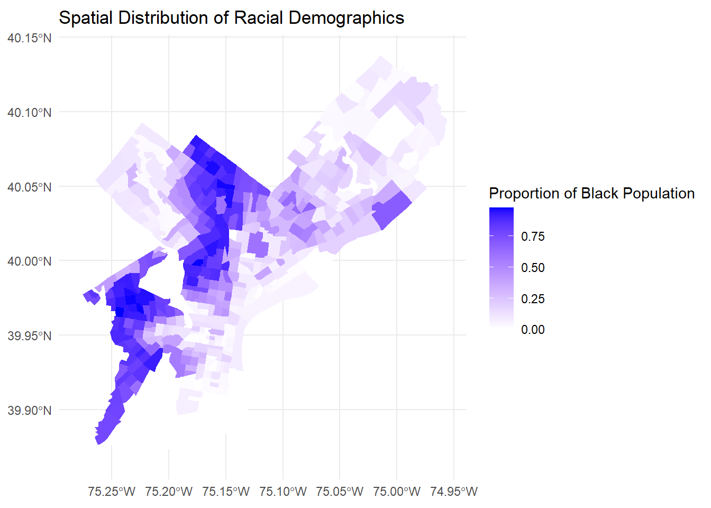
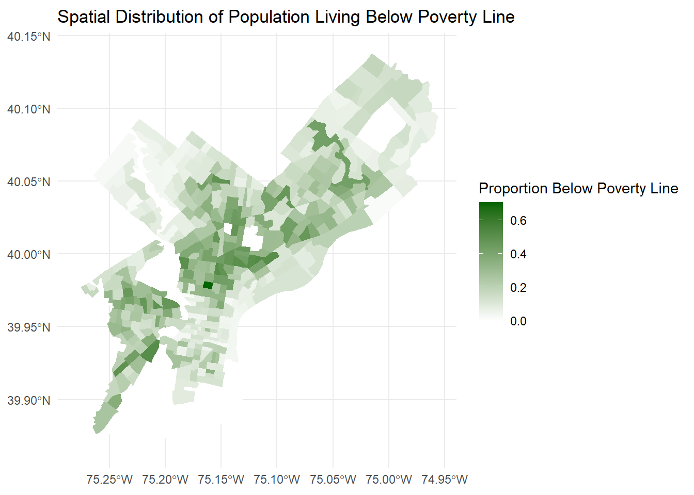
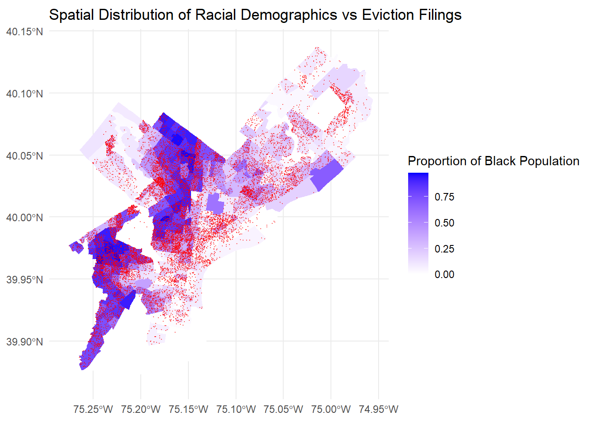
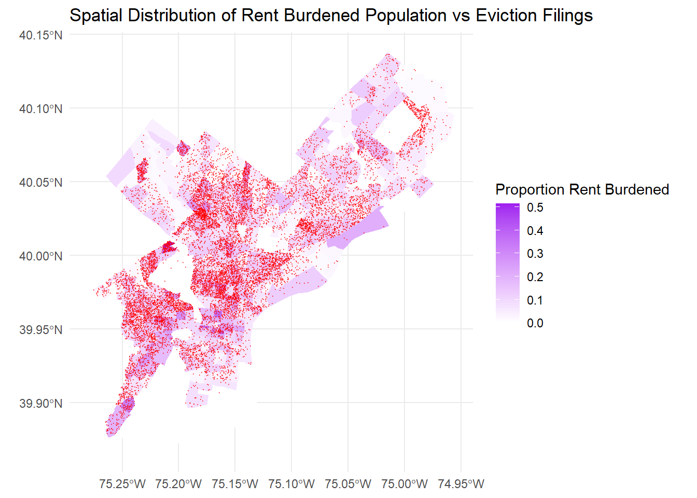
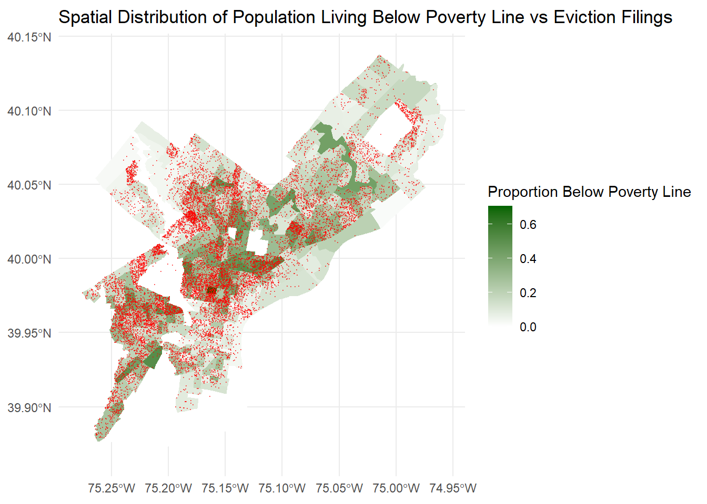
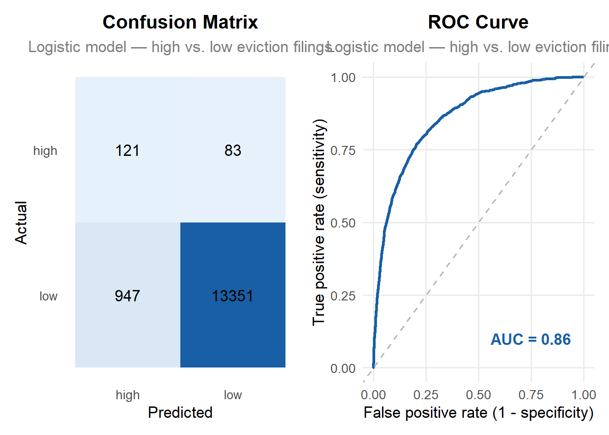

This technical appendix documents the workflow from exploratory data analysis through model evaluation and policy implications of creating a model to predict patterns of eviction across Philadelphia census tracts. Eviction filings have seen fluctuation since the pandemic, but patterns remain with activity concentrated in North and West Philadelphia. This analysis helps to understand the spatial and demographic factors connected to evictions, and then proposing recommendations for policy to address these issues. Our final model identifies higher-risk census tracts where proactive eviction prevention measures and policies should be allocated. The patterns identified by the model can support decision-making around renter assistance and resource distribution to proactively target areas with disproportionate patterns of eviction.
Introduction and Problem Statement
Following the COVID-19 Pandemic, evictions have dropped across Philadelphia. This is a positive trend, and is reflects the positive impact that anti-eviction city policy has had following nation-wide eviction moratoriums placed in effect in early 2020. Six years on from initial outbreak, average eviction counts by census tract have fallen city-wide; and have seemingly stabilized since 2022.
However, despite these positive trends, certain neighborhoods across the city still experience high eviction counts - with many high eviction-count census tracts clustered in North and West Philadelphia. Given that high prevalence of evictions have become spatially clustered, we seek to develop a predictive model that is capable of predicting which census tracts will have a higher than average eviction count.
This model’s spatial component is particularly important for understanding efficient resource allocation, as census tracts have different average rents, and thus emergency rental assistance allocations would need to be adjusted accordingly. Furthermore, a spatially-predictive prevention model enables the deployment of on-the ground resources such as housing counseling and homelessness services. Finally, knowing the spatial distribution of future evictions, allows city officials to proactively look for patterns in housing quality, landlord type, and other spatial data which connects to eviction likelihood.
#Exploratory Data Analysis
Required Packages
#load in packageslibrary(tidyverse)
Warning: package 'tidyverse' was built under R version 4.5.2
Warning: package 'ggplot2' was built under R version 4.5.3
Warning: package 'tidyr' was built under R version 4.5.3
Warning: package 'purrr' was built under R version 4.5.3
Warning: package 'dplyr' was built under R version 4.5.3
Before starting our exploratory analysis, we cleaned the data to remove null value in date and location data, and replace null values in eviction counts with zeros. We then began to construct exploratory data sets that visualize city-wide eviction filings over time. We then constructed spatial data sets through gathering census shape files and joining them with the eviction data set. Evictions were already aggregated to a census-tract level.
# Date rangecat("Date range:", min(eviction$month),"/",min(eviction$year), "to", max(eviction$month),"/",max(eviction$year), "\n")
Date range: 01 / 2020 to 12 / 2026
Cleaning Eviction Filing Data
# Summary per month per yearevictions_summary <- eviction %>%st_drop_geometry() %>%group_by(GEOID, month, year) %>%summarize(total_filings =sum(filings_2020, na.rm =TRUE),filings_avg =mean(filings_avg, na.rm =TRUE),prepan_avg =mean(filings_avg_prepandemic_baseline, na.rm =TRUE),racial_majority = racial_majority )#Evictions Filings at a City Level Over Timeevictions_over_time_city_wide <- eviction %>%st_drop_geometry() %>%group_by(month, year) %>%summarize(total_filings =sum(filings_2020, na.rm =TRUE),filings_avg =mean(filings_avg, na.rm =TRUE), )# Census tracts for when we need themtracts_phl <-tracts(state ="PA", county ="Philadelphia", year =2025) %>%st_transform(4326)
# Joining evictions data with census data and census geometry - allowing us to visualize evictions spatiallyspatial_evictions <- eviction %>%left_join(tracts_phl, by ="GEOID")spatial_evictions <-st_as_sf(spatial_evictions)
Trends in Post-Pandemic Eviction Filings
From our exploratory analysis, we see that evictions fell sharply following the beginning of the pandemic - a response to eviction moratorium placed into effect following lock-down orders. Evictions slowly increased city-wide, peaking in late summer of 2022. This is possibly due to COVID-19 emergency rental assistance relief money drying up in late 2022, leaving some renters unable to pay accumulated arrears or unable to cover lapses in income. Evictions stabilized through the fall and winter of 2022, and have relatively plateaued at approximately 1,200 filings since 2023. Notably though, evictions have not increased to a February 2022 baseline since the pandemic.
Examining where the most evictions have taken place city-wide, we can see that since evictions began to return to normal in 2022, the majority of evictions have taken place in North and West Philadelphia. This largely makes sense given that these neighborhoods are lower income and more renter dominated compared to other parts of the city. However, there are hot spots of evictions in the far northeast and northwest that bare further consideration, as they are seemingly not characteristic of the other neighborhoods identified as being hotspots of evictions.
Most neighborhoods dropped in alignment with the city’s declining eviction trend. Most notably, southwest and north Philadelphia see very strong drops in evictions relative to pre-pandemic data. However, neighborhoods in the river wards and northwest have increased in average evictions. This presents an area for further exploration, understanding and predicting why certain neighborhoods are not taking advantage of post-pandemic low evictions.
Change Since Pandemic Baseline
evictions_change <- spatial_evictions %>%filter(year =="2025"& month =="12") %>%#oddly it seems that the pandemic baseline numbers haven't been filled in for 2026 data? We should discuss this. So as of now, I've selected for december 2025.mutate(post_pandemic_change = filings_avg - filings_avg_prepandemic_baseline)ggplot(evictions_change) +geom_sf(aes(fill = post_pandemic_change), color =NA) +scale_fill_gradient2(low ="#2166ac",mid ="white",high ="#d6604d",midpoint =0,name ="Change in filings\nvs. pre-pandemic avg",labels = scales::comma,na.value ="grey85" ) +labs(title ="Change in eviction filings vs. pre-pandemic baseline",subtitle ="December 2025, census tract level",caption ="Positive values (red) = more filings than pre-pandemic average" ) +theme_void(base_size =11) +theme(plot.title =element_text(face ="bold", size =14, margin =margin(b =4)),plot.subtitle =element_text(color ="gray40", size =11, margin =margin(b =12)),plot.caption =element_text(color ="gray60", size =9),legend.position ="right",legend.key.width =unit(0.4, "cm"),legend.key.height =unit(1.5, "cm"),plot.margin =margin(12, 12, 12, 12) )
Included Variables and Rationale
In predicting evictions, we relied heavily on demographic and housing data as key predictors of eviction likelihood. An outline of our included variables is below, alongside justifications and limitations of each.
Housing Costs:
We included housing costs under the rationale that higher costs would produce higher barriers to timely payment of rent, ultimately producing evictions. Notably, this might also capture high-end markets, but we believe that its inclusion is justified, as cost burdened renters with higher gross levels of rent are less likely to be able to access additional financial resources sufficient to cover gaps in rent compared to renters in lower cost markets.
Rent Burden
Rent burden is included under the straightforward assumption that higher cost burden will produce higher risks of non-payment. Non-payment may lead to evictions.
Higher Education Attainment
Higher education levels are expected to be correlated with increased earnings, but also increased social capital, which would provide tenants with additional supports if facing eviction.
Income Level
Incomes are expected to correlate with eviction filings, as lower income residents are more likely to be at risk of evictions due to non-payment of rent.
Age of Housing Stock
Housing stock age is included under the rationalization that newer, higher quality, units are more likely to evict tenants for lease infringements or damage to the property. Furthermore, new units are expected to have stronger / professionalized property management teams capable of filing for eviction more efficiently.
Proportion of Renters
Census tracts with a large share of renters are more likely to have higher eviction rates, as homeowners cannot be evicted.
Unemployment Rate
Similar to income, we would expect unemployed renters to be unable to cover portions of their rent, thus resulting in late payments, arrears, and eventual eviction.
Racial Majority
We want to include a racial analysis, as Black, Hispanic, and other minority groups are likely at higher risk for eviction due to systemic inequality.
Gender of Evictions
Similar to race, we want to see if gender is a correlate with evictions. This variable represents the proportion of the census tract that are males.
Temporal Lags
Given that rental markets operate cyclically, we included a monthly and yearly lag to account for this.
Housing Choice Voucher
We included HCV recipients by census tract to attempt to complicate the correlation between low-incomes and evictions. We assume that HCV recipients, though low income, are less likely to be evicted, as they are not expected to pay more than 30% of their income in rent. This helps to control for shocks experienced to households such as job loss or medical emergencies.
Proportion of Vacant Lots
Our inclusion of vacant land rests on the assumption that fewer vacancies indicates a more competitive or built-out rental market, and thus landlords are more likely to advance eviction proceedings, as they are more likely to attract a replacement tenant. Furthermore, high lot vacancy rates may be indicative of absentee landlords who are less likely to file for eviction.
Month Fixed Effects
Finally, month fixed effects controls for factors outside of these variables which occur monthly. For example, January sees high levels of evictions, likely due to court processing timelines or leases expiring.
Gathering Census Data
# census data# Load variablesacs_vars_2024 <-load_variables(2024, "acs5", cache =TRUE)#acs_vars_2020 <- load_variables(2020, "acs5", cache = TRUE)# Load secondary data on access + socioeconomics + amenities + spacial structure# Define ACS variables 2024census_vars <-c(med_inc ="B19013_001", # Median household incomemed_home_value ="B25077_001", # Median home valuetotal_pop ="B01003_001", # Total populationpoverty_total ="B17001_002", # Poverty universeedu_bachelors ="B15003_022", # Bachelor'sedu_masters ="B15003_023",edu_prof ="B15003_024",edu_phd ="B15003_025",tenure_total ="B25003_001", # Total occupiedrenter_occupied ="B25003_003", # renter occupiedwhite ="B03002_003",black ="B03002_004",latinx ="B03002_012",rent_3034 ="B25070_007", # rent burdenrent_3539 ="B25070_008",rent_4049 ="B25070_009",rent_50 ="B25070_010",med_rent ="B25064_001",house_age ="B25035_001", # median housing built yearunemp ="B23025_005",pop_male ="B01001_002")# Pull census dataphl_census <-get_acs(geography ="tract",variables = census_vars,state ="PA",county ="Philadelphia",year =2024,survey ="acs5",geometry =TRUE,progress =FALSE,)phl_census_clean <- phl_census %>%select(GEOID, NAME, variable, estimate, geometry) %>%# Drop MOEpivot_wider(names_from = variable, values_from = estimate) %>%# Pivot to wide tablemutate(prop_male = pop_male/total_pop,edu_higher = (edu_bachelors + edu_prof + edu_phd)/total_pop,rent_burden = (rent_3034 + rent_3539 + rent_4049 + rent_50)/total_pop,pov_rate = poverty_total/total_pop,rent_occ = renter_occupied/tenure_total,white = white/total_pop,black = black/total_pop,latinx = latinx/total_pop,unemp = unemp/total_pop,house_age =2026-house_age ) %>%select( GEOID, NAME, geometry, total_pop, prop_male, white, black, latinx, edu_higher, rent_burden, med_rent, pov_rate, med_inc, unemp, rent_occ, house_age, med_home_value ) %>%st_transform(4326)hcv <-st_read(here("data/philly_hcv_data.shp"), quiet =TRUE) %>%filter(!grepl("34", STATE)) %>%st_transform(4326)vacant <-st_read(here("data/Vacant_Indicators_Bldg.shp"), quiet =TRUE) %>%st_transform(4326)#Grouping vacancies by census tractvacant_spatial <- vacant %>%st_join(tracts_phl)vacant_spatial <- vacant_spatial %>%st_drop_geometry() %>%group_by(GEOID) %>%summarize(n_vacant =n())hcv_vacant <- hcv %>%left_join(vacant_spatial, by ="GEOID") %>%select(GEOID, HCV_PUBL_1, HCV_PUBLIC, n_vacant)hcv_vacant <- hcv_vacant %>%mutate(n_vacant =replace_na(n_vacant, 0),HCV_PUBL_1 = (HCV_PUBL_1 /100))# join hcv and vacant lots onto census datapredictor_varbs <- phl_census_clean %>%st_drop_geometry() %>%left_join(hcv_vacant, by ="GEOID")predictor_varbs <- predictor_varbs %>%drop_na()#Now we have a final dataset with all our predictor variables that can be joined to the evictions data#Joining with our evictions dataset for final model building. eviction <- eviction %>%left_join(predictor_varbs, by ="GEOID")eviction <- eviction %>%st_as_sf()
Spatial Patterns of Census Data
We assumed that vulnerable populations are more likely to face evictions. Due to this, we examined the proportion of Black population, those living rent burdened, and those living below the poverty line of each census. These spatial distributions were then compared against the distribution of evictions throughout Philadelphia. Visualizing the distribution of Philadelphia’s Black population, this revealed significant clustering in North and West Philadelphia - areas that should be examined closer for elevated eviction filings.
Exploring Census data
# demographic characteristics vs eviction filingsdemo_map <-ggplot(phl_census_clean) +geom_sf(aes(fill = black), color =NA) +scale_fill_gradient2(low ="black",high ="blue",na.value ="white",name ="Proportion of Black Population") +labs(title ="Spatial Distribution of Racial Demographics")+theme_minimal()rent_burden_map <-ggplot(phl_census_clean) +geom_sf(aes(fill = rent_burden), color =NA) +scale_fill_gradient2(low ="black",high ="purple",na.value ="white",name ="Proportion Rent Burdened") +labs(title ="Spatial Distribution of Rent Burdened Population")+theme_minimal()poverty_rate <-ggplot(phl_census_clean) +geom_sf(aes(fill = pov_rate), color =NA) +scale_fill_gradient2(low ="black",high ="darkgreen",na.value ="white",name ="Proportion Below Poverty Line") +labs(title ="Spatial Distribution of Population Living Below Poverty Line")+theme_minimal()demo_map

Rent burden reveals a different spatial pattern. While majority Black census tracts have a large proportion being rent burdened, especially in West Philadelphia, the highest levels of rent burden are in expensive neighborhoods such as Rittenhouse, Fitler Square, Washington Square West, and Farimount. This may reflect the fact that these neighborhoods have overpriced baseline housing costs.
Exploring Census data
rent_burden_map
With the exception of West Philadelphia, cost burden and poverty rate do not appear to be strongly spatially correlated. However, majority black census tracts appear much more likely to have a large share of residents living below the poverty line.
Exploring Census data
poverty_rate

Given our exploration of census variables that we believe are strong predictors of evictions, we expect that West Philadelphia is at the greatest risk of elevated eviction filings due to its simultaneous clustering of majority black census tracts, cost burden, and poverty rates.
Spatial Patterns in Evictions
Exploring Eviction data
# filter to 2025 onlyevictions_2025 <- spatial_evictions %>%filter(year ==2025)evictions_2025_proj <-st_transform(evictions_2025, 26918) # NAD83 / UTM zone 18Nevictions_dots <- evictions_2025_proj %>%mutate(n_dots = filings_2020) %>%filter(n_dots >0) %>%mutate(points =map2(geometry, n_dots, ~st_sample(.x, size = .y))) %>%st_drop_geometry() %>%unnest(points) %>%st_as_sf() %>%st_set_crs(26918) # WGS84 (lat/long)# plotevictions_map <-ggplot() +geom_sf(data = evictions_2025_proj, fill ="grey95", color ="white") +geom_sf(data = evictions_dots, color ="red", size =0.2, alpha =0.6) +theme_minimal() +labs(title ="Eviction Filings (2025)",subtitle ="Dot density map" )evictions_and_black_populatoin <-ggplot(phl_census_clean) +geom_sf(aes(fill = black), color =NA) +geom_sf(data = evictions_dots, color ="red", size =0.002, alpha =0.5) +scale_fill_gradient2(low ="black",high ="blue",na.value ="white",name ="Proportion of Black Population") +labs(title ="Spatial Distribution of Racial Demographics vs Eviction Filings")+theme_minimal()evictions_and_rent_burden <-ggplot(phl_census_clean) +geom_sf(aes(fill = rent_burden), color =NA) +geom_sf(data = evictions_dots, color ="red", size =0.002, alpha =0.5) +scale_fill_gradient2(low ="black",high ="purple",na.value ="white",name ="Proportion Rent Burdened") +labs(title ="Spatial Distribution of Rent Burdened Population vs Eviction Filings")+theme_minimal()poverty_evictions <-ggplot(phl_census_clean) +geom_sf(aes(fill = pov_rate), color =NA) +geom_sf(data = evictions_dots, color ="red", size =0.002, alpha =0.5) +scale_fill_gradient2(low ="black",high ="darkgreen",na.value ="white",name ="Proportion Below Poverty Line") +labs(title ="Spatial Distribution of Population Living Below Poverty Line vs Eviction Filings")+theme_minimal()
Eviction data
evictions_map
Eviction filings are spatially dispersed through residential areas throughout the city. However, on first inspection it appears that there are significantly more evictions filed in North and West Philadelphia, consistent with our census data hypothesis.
Eviction data
evictions_and_black_populatoin

Examining the spatial distribution of evictions and majority black census tracts, there is a noticeable overlap between majority black census tracts and the prevalence of evictions. However, large portions such as Kensington and the Riverwards, as well as areas of South Philadelphia and East Falls, do not have a sizable black population but appear to have elevated eviction filings.
Eviction data
evictions_and_rent_burden

Examining evictions and rent burden shows that there are key parts of the city with low eviction levels and high degrees of rent burden. In particular, portions of the Northeast, Center City, and Queen Village have high levels of rent burden but low eviction counts.
Eviction data
poverty_evictions

Evictions filings and the proportion of residents below the poverty line appear to be fairly correlated. A noteworthy exception to this is a portion of Southwest Philadelphia that has high levels of poverty but low eviction filings.
Developing Complete Panel Dataset
#Now I need to create the panel dataset in order to build the model and do train/test splits#Data is currently in a station-month structure, where each row represents a unique station-month combination. # Calculate expected panel sizen_months <- eviction %>%distinct(month, year) %>%nrow()n_tracts <-length(unique(eviction$GEOID))expected_rows <- n_months * n_tracts#We expect the eviction dataset to have 31,008 rows based on the total number of possible month / tract combinations. Given that the dataset already has this number of rows, we can conclude that it is already a complete panel data set, and will not require expanding the panel to include missing combinations. #However, we do want to cut the evictions data down to remove outliers that we observed in our EDA. Specifically, we only want ot October 2022 and forward, as this is seemingly when the evictions stabilized. eviction_final <- eviction %>%filter(year >2021| (year ==2021& month >=10))#making a temporal lag for one month ago and one year ago# Create lag variables for each tracteviction_final <- eviction_final %>%arrange(GEOID, year, month) %>%group_by(GEOID) %>%mutate(lag1_month =lag(filings_2020, 1), # evictions 1 month agolag12_year =lag(filings_2020, 12) # evictions 1 year ago (same month) ) %>%ungroup()# Remove rows with NA lags (first 24 hours for each station)eviction_final <- eviction_final %>%filter(!is.na(lag1_month), !is.na(lag12_year))#need to remove some census tracts from the data that had missing census data or vacancies data. eviction_final <- eviction_final %>%filter(!is.na(total_pop))
train-test split
# Which stations have trips in BOTH early and late periods?early_evictions <- eviction_final %>%filter(year <2024) %>%filter(filings_2020 >0) %>%distinct(GEOID) %>%pull(GEOID)late_evictions <- eviction_final %>%filter(year >=2024) %>%filter(filings_2020 >0) %>%distinct(GEOID) %>%pull(GEOID)# Keep only stations that appear in BOTH periodscommon_evictions <-intersect(early_evictions, late_evictions)# Filter panel to only common stationseviction_model_data <- eviction_final %>%filter(GEOID %in% common_evictions)# NOW create train/test splittrain <- eviction_model_data %>%filter(year <2024)test <- eviction_model_data %>%filter(year >=2024)
Model Building
Temporal Lag Model
Our first model includes only temporal lags as predictors of future evictions. We began by using a poisson model, but analysis revealed that the data is over-distributed, thus we switched to using a negative binomial model.
temporal lag
#now building the first model that only uses temporal lag variablestemporal_only_model <-glm( filings_2020 ~ lag1_month + lag12_year,data = train,family = poisson)temporal_only_model
Call: glm(formula = filings_2020 ~ lag1_month + lag12_year, family = poisson,
data = train)
Coefficients:
(Intercept) lag1_month lag12_year
0.63765 0.08025 0.03325
Degrees of Freedom: 5324 Total (i.e. Null); 5322 Residual
Null Deviance: 17570
Residual Deviance: 13280 AIC: 25330
temporal lag
#given that residual deviance is much greater than the degrees of freedom, we should use a negative binomial model for this datalibrary(MASS)temporal_only_model_nb <-glm.nb(filings_2020 ~ lag1_month + lag12_year,data = train)summary(temporal_only_model_nb)
Call:
glm.nb(formula = filings_2020 ~ lag1_month + lag12_year, data = train,
init.theta = 2.034444759, link = log)
Coefficients:
Estimate Std. Error z value Pr(>|z|)
(Intercept) 0.381518 0.018567 20.55 <2e-16 ***
lag1_month 0.121543 0.003386 35.89 <2e-16 ***
lag12_year 0.058182 0.002960 19.65 <2e-16 ***
---
Signif. codes: 0 '***' 0.001 '**' 0.01 '*' 0.05 '.' 0.1 ' ' 1
(Dispersion parameter for Negative Binomial(2.0344) family taken to be 1)
Null deviance: 7939.8 on 5324 degrees of freedom
Residual deviance: 5899.3 on 5322 degrees of freedom
AIC: 21958
Number of Fisher Scoring iterations: 1
Theta: 2.0344
Std. Err.: 0.0743
2 x log-likelihood: -21949.8840
temporal lag
#the negative binomial model's residual deviance is much closer to the degrees of freedom, making this a stronger model
Census Model
Our next model builds on the temporal lag model, but includes census variables such as: racial demographics, higher education attainment, poverty rate, rent burden, income levels, unemployment rate, housing age, home values, and gender ratios.
Importantly this model finds that educational attainment, cost burden, poverty rate, and race are significant predictors of eviction.
Our initial models saw modest improvements as new variables were added. However, with an MAE of approximately 2 evictions, while mean evictions by census tracts is also approximately 2, these models have very little to no predictive capacity. Thus, we pursued binary predictions to more accurately classify tracts according to risk.
initial model comparisons
test <- test %>%mutate(pred1 =predict(temporal_only_model, newdata = test),pred2 =predict(temporal_only_model_nb, newdata = test),pred3 =predict(census_model, newdata = test),pred4 =predict(everything_model, newdata = test) )# Calculate MAE for each modelmae_results <-data.frame(Model =c("1. Poisson Model - Temporal Lag Only","2. Negative Binomial - Temporal Lag Only","3. Negative Binomial - Temporal Lag + Census","4. Negative Binomial - Temporal Lag + Census + Other" ),MAE =c(mean(abs(test$filings_2020 - test$pred1), na.rm =TRUE),mean(abs(test$filings_2020 - test$pred2), na.rm =TRUE),mean(abs(test$filings_2020 - test$pred3), na.rm =TRUE),mean(abs(test$filings_2020 - test$pred4), na.rm =TRUE) ))kable(mae_results, digits =2,caption ="Mean Absolute Error by Model (Test Set)",col.names =c("Model", "MAE (evictions)")) %>%kable_styling(bootstrap_options =c("striped", "hover"))
Mean Absolute Error by Model (Test Set)
Model
MAE (evictions)
1. Poisson Model - Temporal Lag Only
2.18
2. Negative Binomial - Temporal Lag Only
2.17
3. Negative Binomial - Temporal Lag + Census
2.15
4. Negative Binomial - Temporal Lag + Census + Other
2.14
Where are Model Errors Most Concentrated?
Based on the map below, errors are most concentrated in Northeast, Northwest, and West Philadelphia. This indicates that our model is failing to capture local variation in these parts of the city.
Visualizing MAE
tract_errors <- test %>%group_by(GEOID) %>%summarize(MAE =mean(abs(filings_2020 - pred1), na.rm =TRUE),avg_demand =mean(filings_2020, na.rm =TRUE),.groups ="drop" ) %>%filter(!is.na(GEOID))error_plot <-ggplot() +geom_sf(data = tracts_phl, color ="gray80", fill ="gray95", linewidth =0.2) +geom_sf(data = tracts_phl %>%left_join(st_drop_geometry(tract_errors), by ="GEOID"),aes(fill = MAE), color ="white", linewidth =0.2) +scale_fill_viridis_c(option ="magma",direction =-1,na.value ="gray85",name ="MAE" ) +labs(title ="Model Error by Census Tract",subtitle ="Mean Absolute Error in predicted eviction filings",caption ="Gray tracts had no predictions" ) +theme_void(base_size =12) +theme(plot.title =element_text(face ="bold", hjust =0.5),plot.subtitle =element_text(hjust =0.5, color ="gray40"),legend.position ="right" )error_plot
Logistic Model
Given that the poisson and negative binomial models are not strong predictors of evictions by census tract, we developed a logistic model to predict the census tracts that are predicted to be at high risk of eviction filings.
In doing so, we had to define what was classified as “high risk.” Census tracts that are 1.5 standard deviations above the average are considered high-eviction tracts for the purposes of our classification. We considered these tracts to be anomalous among census tracts, and thus need targeted intervention.
Evictions Panel Distribution
#fist finding tracts that are in the top quartile by month ggplot(eviction_model_data, aes(x = filings_2020)) +geom_histogram(binwidth =1, fill ="steelblue", color ="white") +labs(title ="Distribution of Eviction Filings (2020)",x ="Filings (2020)",y ="Count" ) +theme_minimal()
Model Predictive Capacity and Limitations
Our logistic model has strong predictive capacity, with a AUC of 0.898. This means that our model is able to accurately classify at a much higher rate than random chance. Our model also strongly predicts census tracts with a low eviction counts, but this is largely due to our data skewing towards low-risk tracts. However, our model only accurately predicts roughly 60% of true positives, indicating that the model should be refined further to better predict high-risk census tracts.
We chose a threshold of 0.75 for predicting low risk census tracts, which means that we were willing to risk more false positives at the expense of lower negative accuracy. This is because we’d rather falsely predict a high-risk census tract than a low-risk census tract.
#Creating a lower threshold so that we capture more true positives at the risk of also capturing more false positiveslibrary(yardstick)test2_df <- test2_df %>%mutate(.pred_class_low_threshold =as.factor(ifelse(.pred_high >=0.75, "high", "low")))cm <-conf_mat(test2_df, truth = category, estimate = .pred_class_low_threshold)confusion_matrix <-autoplot(cm, type ="heatmap") +scale_fill_gradient(low ="#E6F1FB", high ="#185FA5") +labs(title ="Confusion Matrix",subtitle ="Logistic model — high vs. low eviction filings",x ="Predicted",y ="Actual" ) +theme_minimal(base_size =13) +theme(plot.title =element_text(face ="bold", hjust =0.5),plot.subtitle =element_text(hjust =0.5, color ="gray50"),legend.position ="none",panel.grid =element_blank() )# --- ROC Curve ---auc_val <-roc_auc(test2_df, truth = category, .pred_high) %>%pull(.estimate) %>%round(3)ROC_Curve <-roc_curve(test2_df, truth = category, .pred_high) %>%ggplot(aes(x =1- specificity, y = sensitivity)) +geom_line(color ="#185FA5", linewidth =1.2) +geom_abline(linetype ="dashed", color ="gray70") +annotate("text", x =0.75, y =0.1,label =paste0("AUC = ", auc_val),size =4.5, color ="#185FA5", fontface ="bold") +labs(title ="ROC Curve",subtitle ="Logistic model — high vs. low eviction filings",x ="False positive rate (1 - specificity)",y ="True positive rate (sensitivity)" ) +theme_minimal(base_size =13) +theme(plot.title =element_text(face ="bold", hjust =0.5),plot.subtitle =element_text(hjust =0.5, color ="gray50"),panel.grid.minor =element_blank() )confusion_matrix | ROC_Curve

Policy Implications and Recommended Implementation
Our model demonstrates that tracts with high eviction counts can be predicted. Though our model is limited in the high-risk tracts that it captures, it nonetheless captures 60% of high-risk tracts, meaning that interventions can be targeted at a majority of high-risk tracts. Our model’s ability to strongly predict low-risk tracts is not a drawback, however, as this ensures that the city would not be over-extending resources to areas of the city that may not need it as much.
Furthermore, our exploratory analysis finds that rent burden is a strong predictor of eviction likelihood, meaning that policies which strengthen incomes or reduce rent will positively impact evictions city wide. There were also several tracts where rent burden was high, but evictions were low, implying some different relationship at play mediating rent burden and evictions, and this is an avenue for further explorations. Either by implementing policies as mentioned, or examining why certain rent-burdened tracts are more likely to evict their tenants, it is necessary to understand this distinction, so as to ensure even the rent-burdened are housed, especially in high-risk tracts.
The uneven spread of our model error across the city is also a point of concern and is something to be explored. The areas of Northeast, Northwest, and West Philadelphia are where the errors were most heavily concentrated, and this is concerning especially as these are the areas where we determined the vulnerable population to be concentrated, and where there are higher rates of evictions. High errors make for unreliable models, and in cases where people’s livelihoods are concerned, this is an alarming point that needs to be addressed. The unequal distribution of errors implies an underlying problem either during the data collection or data processing phases. The fact that this is an issue, especially in vulnerable areas, is an inequity issue that needs to be remediated.
Therefore, we recommend that the data collection and processing stages are re-evaluated to ensure equitable data collection throughout the entire city to best recreate our model, which in turn will yield more tangible results, informing nuanced policy decisions.
We also recommend that the model is updated monthly as eviction reports are released by the Princeton Eviction Lab, allowing the model to provide a monthly prediction of which census tracts in the city are at particular risk of eviction.
Data Sources
Eviction Data - Eviction Lab, Philadelphia, Monthly Data - evictionlab.org
Census Data - Gender (Sex), Household Tenure (Renters vs. Owners), Race, Unemployment, Housing Age (Current Year - Year Built), Educational Attainment, Housing Costs, Rent Burden - ACS, 2024, Census Tracts